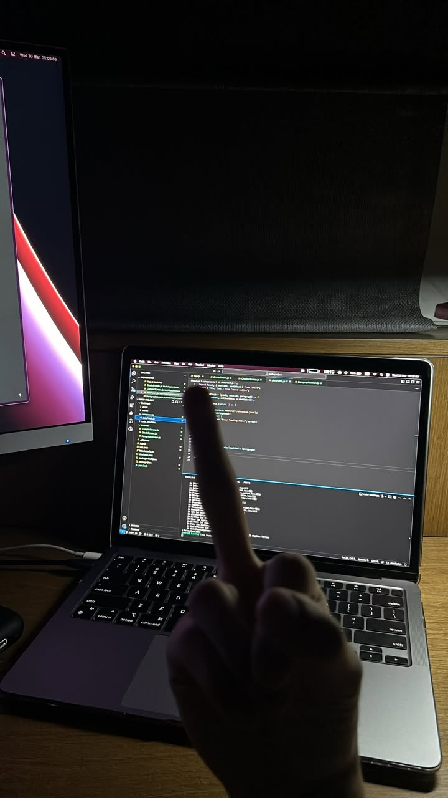
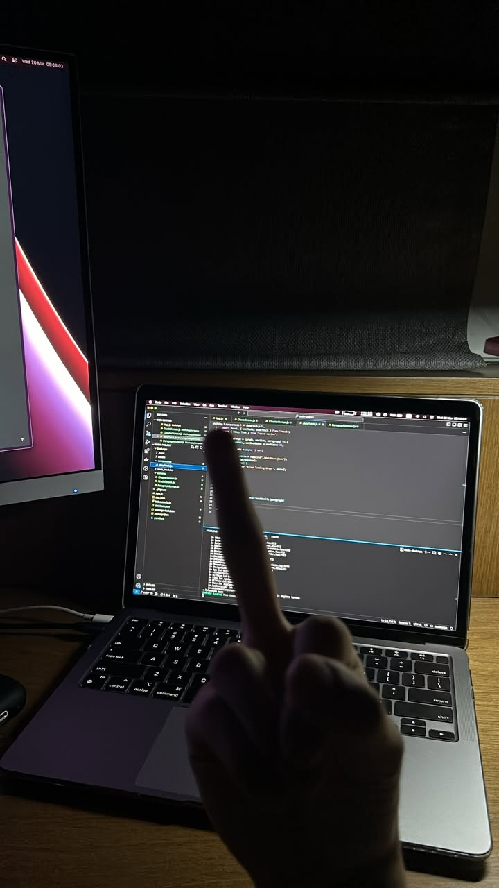

Sports
I love staying active through gym sessions, hiking and coding. These activities keep me motivated and disciplined. In my spare time I just do nothing and enjoy myself.
I love staying active through gym sessions, hiking and coding. These activities keep me motivated and disciplined. In my spare time I just do nothing and enjoy myself.
 



Traveling is a part of my life. While I travel, my vision of the world becomes wider. Getting along with people from different cultures such as America, Europe or Asia is amazing. But tourism is not just going to different countries, it is also important to explore your home country. That's exactly how i did trekking to the breathtaking mountains of Almaty or driving through steppes of Kazakhtan.


Cooking is my creative outlet. Experimenting with recipes and flavors helps me unwind and express myself. Cooking dishes for me and my friends also brings happines and joy to me.


Currently, I am pursuing the Foundation programme at Asia Pacific University in Malaysia, preparing for my future academic and career goals. I study Computer Technologies as my Pre-University course, and after that I'm planning to start my bachelor's degree as a Software Engineer.